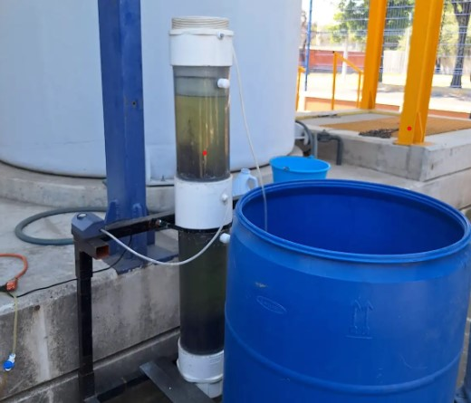

Prácticas Profesionales en PTAR
La PTAR cuenta con oportunidades para realizar tu servicio social colaborando en la planta desarrollando desarrollo profesional para carreras de ingenería o a fines.
Consuta los requisitos en:
Requisitos

La PTAR cuenta con oportunidades para realizar tu servicio social colaborando en la planta desarrollando desarrollo profesional para carreras de ingenería o a fines.
Consuta los requisitos en:
Requisitos